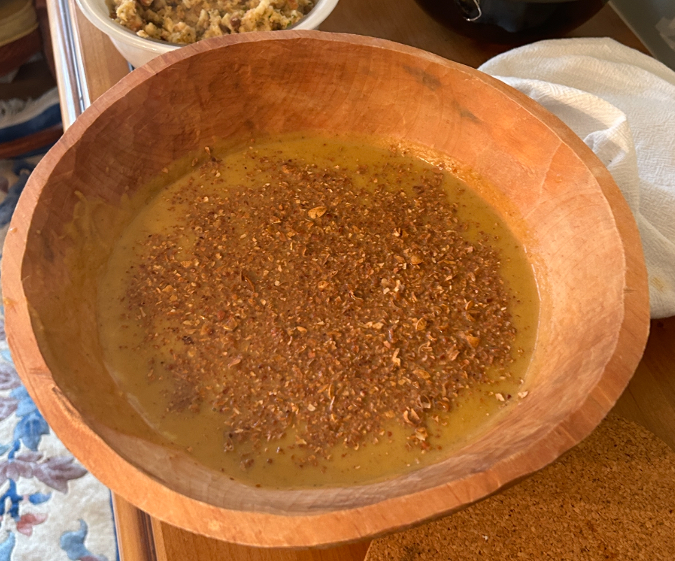

Butternut Squash Soup

A savory Thanksgiving soup, heavily seasoned with North African spices.
This is a soup popular with my family. I make it every year for Thanksgiving. It works equally well with butternut squash, acorn sqaush, pumpkin, or a combination of the three. I serve it in a bowl that was hand-crafted in the North Georgia mountains. It is creamy with a warm and earthy taste.
Ingredients:
- 2 Tbsp whole cumin seed
- 1 Tbsp whole coriander seed
- 2 Turkish bay leaves
- 5-8 allspice berries
- 1 medium butternut squash
- 1 medium acorn squash
- 1 large onion, medium diced
- 1 container vegetable or chicken stock
- 1/2 stick butter
- 1/2 tsp ground turmeric
- 1/2 tsp ground ginger
- 6-8 whole green cardamom pods, lightly cracked
- 1 cup heavy cream
- 1 Tbsp olive oil
- Salt (coarse sea salt preferred)
Directions:
- Preheat oven to 325F / 165C / Gas Mark 3
- Toast the cumin, coriander, bay leaves, and allspice berries in a skillet over medium-low heat until brown and fragrant. Remove from heat and allow to cool
- Peel and dice the squash into 1-1.5 inch cubes. Reserve the seeds.
- Rinse the seeds, separate from the pulp, and spread them out to dry on paper towel.
- Take the cooled spices from step 2 and finely grind in a spice grinder or with a mortar and pestle.
- Place a half stick of butter in a 5 quart Dutch oven or large stock pot. Heat until melted and beginning to foam. Add squash and cook over medium high heat stirring until it begins to caramelize, about 8 minutes.
- Add the diced onion and continue cooking until the onion is transparent. Add the ground spice mix and stir until everything is well-coated.
- Add the container of stock. For a richer flavor, I use chicken stock. Reduce to simmer. Add the turmeric, ginger, and cardamom pods. Salt to taste. Simmer uncovered for about 60 minutes, stirring occasionally.
- While the soup simmers, lightly coat the seeds in olive oil, sprinkle them with salt and bake in the preheated oven until golden brown, about 25 minutes. Allow to cool and rind coarsely.
- When soup is ready, turn off heat and remove cardamom pods. Allow to cool for about 15 minutes. Blend until smooth.
- Add 1 cup heavy cream or until it reaches desired consistency. Correct seasonings if needed.
- Serve with the ground roasted seeds sprinkled on top.